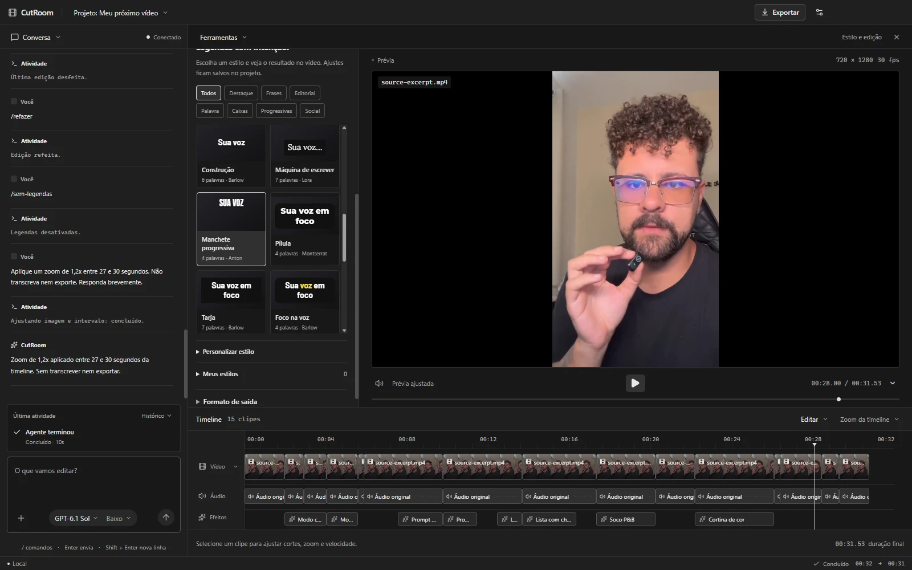

EDITOR DE VÍDEO · WINDOWS + macOS · GRATUITO E OPEN SOURCE
Não pague curso
de edição com IA.
O CutRoom é grátis.
Você descreve a edição.
O CutRoom faz acontecer.
Cortes, legendas e animações. Na sua timeline, com o resultado à vista e a exportação no seu PC.
MCP local para Claude e Codex; Codex também via App Server. Marcas da Anthropic e OpenAI; integração independente.

Escreva como você fala.
“Tire as pausas e aproxime quando eu explicar a ideia.” O agente usa as ferramentas do editor, mostra o andamento e aplica a edição na timeline.
Seu vídeo, do pedido ao resultado.
A FERRAMENTA, SEM O PEDÁGIO.
A edição que você quer.
Sem comprar mais um curso.
Não precisa aprender uma sequência de cliques para cada efeito. Escolha um comando pronto ou explique o que quer mudar. Depois, confira tudo no vídeo.
O editor é grátis. Ponto. São 38 comandos prontos sem conectar uma IA. Para pedidos livres e animações originais, conecte Claude Desktop ou Codex pela ponte MCP local. O Codex também aceita a integração nativa App Server ou uma chave de API.*
*O uso de IA segue os limites do seu plano ou os custos da sua API. Transcrição e renderização são locais.02 / VÁ DIRETO AO PONTO
Menos pausa.
Mais ritmo.
Respirou demais? Repetiu um “né”? A transcrição local ajuda o CutRoom a encontrar as muletas. A detecção de silêncios limpa as pausas.
Use a edição limpa para combinar cortes, zooms discretos e normalização da voz. Você revisa o resultado antes de exportar.
03 / DÊ DESTAQUE À SUA VOZ
Legendas com
personalidade.
24 estilos de verdade. Karaokê, uma palavra por vez, frases progressivas, caixas e animações. Seis famílias de fontes já no aplicativo.
Ajuste cores, posição, tamanho e movimento. Salve seu próprio estilo e leve a mesma identidade para o próximo vídeo.
04 / SUA IDEIA EM MOVIMENTO
Não é só corte.
É o efeito completo.
Do impacto em P&B ao diagrama que explica tudo.
Comandos prontos ou uma cena criada por IA.
E ainda: títulos, identificação, destaques, etapas, diagramas, números, citações, CTAs, contagem regressiva e barras de progresso.
05 / UM ATALHO PARA CADA IDEIA
Digite /
e faça acontecer.
38 comandos no chat ou no botão +.
37 deles funcionam sem conectar uma IA.
Explore, copie e experimente no seu vídeo.
Carregando comandos…
TAMBÉM TEM AQUELE AJUSTE QUE VOCÊ PRECISA.
Do primeiro corte
ao arquivo final.
Um editor completo no essencial.
Sem esconder a edição de você.
01Imagem, ritmo e áudio
Corte e divisão de clipes, zoom e foco, velocidade, câmera lenta, time-lapse, áudio por trecho, espelhamento, P&B, cor viva, cinema, desfoque e vinheta.
Normalização de voz em duas passagens para −14 LUFS na exportação.
02IA com você no controle
Converse com o Codex conectado, escolha o modelo e o nível de raciocínio disponíveis na sua conta. Acompanhe ferramentas e etapas em tempo real e cancele quando precisar.
Use uma sessão local do Codex ou sua própria chave OpenAI. Pedidos à IA dependem de internet e dos limites da sua conta.
03Transcrição e legendas locais
Instale o pacote Transcrição local uma vez. O Faster Whisper transcreve no computador, com tempos por palavra, sem uma API de transcrição.
24 estilos, seis famílias de fontes, cores, contornos, fundos, posição, tamanho, animações e estilos personalizados salvos.
04Animações que entram na timeline
Modelos prontos e cenas originais criadas por texto: títulos, diagramas, etapas, números e destaques sobre a gravação ou em tela cheia, mantendo sua voz.
Prévia sincronizada, duração editável e renderização local com cache. Instale Efeitos e animações para exportar as cenas.
05Seu projeto, do seu jeito
Salve e reabra projetos. Desfaça e refaça alterações. Os arquivos de mídia originais são preservados.
Seis temas salvos: Grafite, Claro, Dark+, Light+, Nord e Tokyo Night. Menus compactos e painéis que aparecem quando você precisa.
06Prévia e exportação no PC
Exporte em MP4 H.264/AAC com seus cortes, legendas e efeitos. O processamento usa seu computador e não exige enviar o vídeo inteiro para renderizar em uma nuvem.
Recuperação automática de formatos incompatíveis com uma prévia H.264 local, sem alterar o original. FFmpeg já incluído.
SEM COMPLICAÇÃO PARA COMEÇAR
Baixou. Abriu.
Começou.
- 01
Baixe o CutRoom.
Instale no Windows x64 ou no macOS (prévia para Intel e Apple Silicon) e importe seu vídeo. Sem cadastro CutRoom e sem assinatura do editor.
Baixar versão 0.6.1 - 02
Escolha seus pacotes.
Em Conversa → Pacotes, instale Transcrição local para legendas e muletas. Efeitos e animações libera a exportação das cenas.
Downloads opcionais. Depois de instalados, processam no seu PC. - 03
Dê sua primeira direção.
Use um dos 38 comandos prontos ou conecte Claude Desktop ou Codex pela ponte MCP local, use o App Server no Codex ou informe sua API. Converse com a IA, confira a timeline e exporte.
/edicao-limpaIA conectada usa os limites do seu plano ou os créditos da sua API.
É grátis mesmo?
Sim. O CutRoom é gratuito e o código original é aberto sob licença MIT. A transcrição e a renderização locais não consomem créditos de IA. Se conectar Codex, Claude ou uma API de IA, o uso do modelo segue os limites e custos da sua conta.
Funciona sem conectar uma IA?
Sim. Você pode usar os 38 comandos prontos, fazer ajustes manuais e exportar. Apenas o comando /animar e os pedidos livres do chat precisam de uma IA conectada. Algumas ações exigem o pacote opcional de transcrição ou de animações.
Preciso de internet para editar?
Para baixar o aplicativo, os pacotes e conectar a IA, sim. Depois de instalados os pacotes necessários, transcrição, comandos prontos e renderização funcionam no computador. O modelo de chat continua dependendo de internet. Texto da transcrição e frames solicitados podem ser enviados ao provedor da IA.
Roda em Mac ou Linux?
O CutRoom tem versão para Windows x64 e uma prévia para macOS Intel e Apple Silicon. Os instaladores macOS são gerados e testados automaticamente, mas ainda não passaram por validação completa com uso real. Eles não são notarizados pela Apple; o macOS pode bloquear a primeira abertura. Siga o guia de instalação no GitHub. Linux ainda não é suportado.
Ele modifica meus vídeos originais?
Não. Os cortes e ajustes são salvos no projeto. Você pode desfazer, refazer e revisar antes de exportar um novo MP4. Preserve os arquivos de mídia para reabrir seus projetos.
O Windows mostrou um aviso na instalação. E agora?
Os instaladores iniciais ainda não possuem assinatura de código e podem gerar um aviso do SmartScreen. Baixe somente pelo release oficial no GitHub, confira a origem e o checksum SHA-256 disponível no mesmo release antes de decidir executar.
Já posso usar nos meus vídeos?
Sim, como uma versão inicial em desenvolvimento. Confira a transcrição, revise cortes automáticos e assista ao arquivo exportado antes de publicar. A exportação usa CPU e o tempo depende do seu PC e do projeto.
CÓDIGO ABERTO, DE VERDADE.
Veja por dentro.
Construa junto.
Leia o código, reporte um problema ou proponha uma melhoria. Para contribuir, faça um fork e envie um pull request.
Mathpcastro / cutroomCódigo original sob licença MIT. Dependências mantêm suas próprias licenças.SEU EDITOR. SEU COMPUTADOR. SUAS IDEIAS.
Seu próximo vídeo
começa com uma frase.
Open source. Sem assinatura do editor.